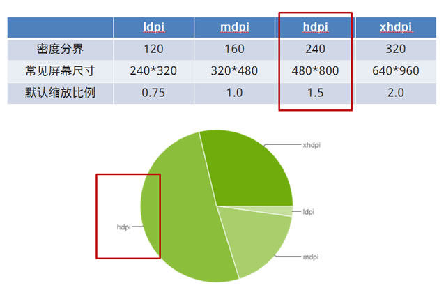

在之前的文章延迟，让你更幸福了吗？一文中，说明了解决移动端浏览器点击事件延迟的方法，其中提到了 viewport 元标签。viewport 通常被称作视口（视窗 ），是指设备的屏幕上能用来显示网页的那一块区域。简单的说，viewport 是严格等于浏览器的窗口的。在桌面浏览器中，viewport 就是浏览器窗口的宽度高度。但在移动端设备上就有点复杂。下面，我们就来仔细的聊一聊 viewport。
viewport 的由来
viewport 元标签不是任何 web 标准的一部分。Mobile Safari 引入了 viewport 元标签来让 web 开发者控制视口的尺寸及比例。目前这种做法被绝大多数流行的移动浏览器所支持、被成千上万的站点所使用。
设备像素（device pixel） 和 CSS 像素（css pixel）
想弄清楚viewport，我们需要先了解设备像素、CSS 像素以及两者之间的差异。
设备像素是物理概念，指的是设备中使用的物理像素。设备像素给出了任何设备的正式分辨率，比如 iPhone 5 的分辨率为 640 x 1136px。每个像素可以根据操作系统设置自己的颜色和亮度。正是这些设备像素的微小距离欺骗了我们肉眼看到的图像效果。
CSS 像素是 Web 编程中的概念，指的是 CSS 样式代码中使用的逻辑像素，主要用来精确度量Web页面上的内容。在 CSS 规范中，长度单位可以分为两类，绝对(absolute)单位以及相对(relative)单位。px 是一个相对单位，相对的是设备像素(device pixel)。一般情况之下，CSS 像素称为与设备无关的像素(device-independent pixel)，简称 DIPs。

设备像素与 CSS 像素的换算
这就需要要谈到每英寸像素和设备像素比。
每英寸像素/屏幕密度（PPI/DPI, pixel per inch）
表示每英寸所拥有的设备像素(pixel)数目，数值越高，代表显示屏能够以越高的密度显示图像。PPI 的计算方式可以参考维基百科每英寸像素
密度无关像素（density-independent pixel）/设备独立像素（device-independent pixel）
设备独立像素也称为密度无关像素，可以认为是计算机坐标系统中的一个点，这个点代表一个可以由程序使用的虚拟像素(比如说CSS像素)，然后由相关系统转换为物理像素。
设备像素比（DPR, device pixel ratio）
以上计算出 PPI 是为了得到屏幕密度分界，获得默认缩放比例，即设备像素比。
设备像素比 ＝ 物理像素 / 设备独立像素
在JavaScript中，可以通过window.devicePixelRatio获取到当前设备的dpr。

由上图可知，PPI 在120-160之间的手机被归为低密度手机，160-240被归为中密度，240-320被归为高密度，320以上被归为超高密度（有研究表明，人类肉眼能够分辨的最高像素点密度是 300 每英寸像素。超过300每英寸像素的屏幕被常常称为Retina 显示屏，这个概念最早由苹果公司于 2010 年推出 iPhone4 手机的时候提出）。
如何获取设备像素（屏幕尺寸）？
通常我们可以从 BOM(Browser Object Model) 中通过 screen.width/screen.height 获取。
如何获取窗口尺寸？
如果你想知道用户访问的页面中有多少空间可以用来 CSS 布局，那么你需要获取浏览器窗口的内部尺寸。可以通过window.innerWidth/window.innerHeight来获取这些尺寸。注意度量的宽度和高度是包括滚动条的。它们也被视为内部窗口的一部分。（这大部分是因为历史原因造成的。）
如何获取 HTML 文档的尺寸？
可见宽度：document.documentElement.clientWidth
实际宽度：document.documentElement.offsetWidth
实际上，document.documentElement指的是 <html> 元素：即任何HTML文档的根元素。
layout viewport 和 visual viewport
当我们比较移动浏览器和桌面浏览器的时候，它们最显而易见的不同就是屏幕尺寸。当我们打开一个未针对移动端做任何 CSS 适配的页面时，我们会不由的慨叹：viewport 太窄了！viewport 并不能按照写给桌面浏览器的 CSS 正确布局。明显的解决方案是使 viewport 变宽一些。聪明的人们想到了一个解决办法：把 viewport 分成两部分：visual viewport和layout viewport。
两个 viewport 都是以 CSS 像素度量的。但是当进行缩放（如果你放大，屏幕上的 CSS 像素会变少）的时候，visual viewport 的尺寸会发生变化，layout viewport 的尺寸仍然跟之前的一样。
George Cummins在Stack Overflow上对基本概念给出了最佳解释：
把layout viewport想像成为一张不会变更大小或者形状的大图。现在想像你有一个小一些的框架，你通过它来看这张大
图。（译者：可以理解为「管中窥豹」）这个小框架的周围被不透明的材料所环绕，这掩盖了你所有的视线，只留这张大图
的一部分给你。你通过这个框架所能看到的大图的部分就是visual viewport。当你保持框架（缩小）来看整个图片的时
候，你可以不用管大图，或者你可以靠近一些（放大）只看局部。你也可以改变框架的方向，但是大图（layout
viewport）的大小和形状永远不会变。
我们工作中所谓的 CSS 布局，尤其是百分比宽度，是以 layout viewport 做为参照系来计算的，它被认为要比 visual viewport 宽。即：<html> 元素在初始情况下用的是 layout viewport 的宽度，这使得站点布局的行为与其在桌面浏览器上的一样。
layout viewport有多宽？每个浏览器都不一样。Safari iPhone为980px，Opera为850px，Android WebKit为
800px，最后IE为974px。
如何获取两个 viewport 的宽度？
如果理解了上面讲述的内容，不难理解下面获取 viewport 的方式：
layout viewport: document.documentElement.clientWidth/document.documentElement.clientHeight
visual viewport: window.innerWidth/window.innerHeight
缩放比例（zoom level）
直接读出缩放比例是不可能的，但是你可以通过以 screen.width/window.innerWidth 来获取它的值。当然这只有在两个属性都被完美支持的情况下才有用。
viewport meta 的详细作用
| Name | Value | Description |
|---|---|---|
| width | 正整数或device-width | 定义视口的宽度，单位为像素 |
| height | 正整数或device-height | 定义视口的高度，单位为像素 |
| initial-scale | [0.0-10.0] | 定义初始缩放值 |
| minimum-scale | [0.0-10.0] | 定义缩小最小比例，它必须小于或等于maximum-scale设置 |
| maximum-scale | [0.0-10.0] | 定义放大最大比例，它必须大于或等于minimum-scale设置 |
| user-scalable | yes/no | 定义是否允许用户手动缩放页面，默认值yes |
在移动端 web 应用开发过程中，常用的设置为：
1 | <meta name="viewport" content="width=device-width"> |
还有一种常用的写法，就是根据自己设备的dpr来还原设备本来宽度，如假设手机devicePixelRatio为2，则设置
1 | <meta name="viewport" content="user-scalable=no"> |
详情可参考延迟，让你更幸福了吗？
阿里 flexible.js 的原理
flexible.js 的一生只做了三件事：
- 动态改写
<meta>标签 - 给
<html>元素添加data-dpr属性，并且动态改写data-dpr的值 - 给
<html>元素添加font-size属性，并且动态改写font-size的值
flexible 本质上就是通过 JavaScript 来动态改写 meta 标签。在正确引入 flexible.js 后，会在 <html> 元素上增加一个 data-dpr 属性，以及一个 font-size 样式。JavaScript 会根据不同的设备添加不同的 data-dpr 值，比如说 2 或者 3，同时会给 <html> 加上对应的 font-size 的值，比如说75px。
如此一来，页面中的元素，都可以通过 rem 单位来设置大小。他们会根据 html 元素的 font-size 值做相应的计算，从而实现屏幕的适配效果。
实际上，如果仅需要做到适配移动端页面，只需要动态改变 <html> 元素上的 font-size 样式即可。那么为什么 flexible.js 会在 <html> 元素上增加一个 data-dpr 属性呢？原因如下：
我们不希望文本在Retina屏幕下变小，另外，我们希望在大屏手机上看到更多文本，以及，现在绝大多数的字体文件都自带
一些点阵尺寸，通常是16px和24px，所以我们不希望出现13px和15px这样的奇葩尺寸。
如果 <html> 元素有了 data-dpr 属性，实现对文本字体的单独设置就变得很轻松。只需要如下代码：
1 | div { |
注： 在 Flexible 中，只对 iOS 设备进行 dpr 的判断，对于 Android 系列，始终认为其 dpr 为 1。
移动端适配该怎么做？
页面布局：
- 基于 CSS 盒模型、绝对/相对定位、元素浮动的传统流式布局
- Flex 布局
- Grid 布局
具体页面元素的大小：
- 限定元素高度，元素宽度 auto
- 基于/类似手淘的 flexible.js，使用 rem
目前，笔者仅在一个 web app 项目中使用了类 flexible.js 的方案。
坦白的说，我对每种方案没有特别的喜好。我的移动端适配的思路为：灵活运用各种技术手段，在达到自己和产品经理都满意的效果基础上，尽可能的给用户最好的视觉体验即可。
最后
设计师和前端工程师之间的设计稿如何协同呢？
一般由设计师按照设备像素为单位制作设计稿。前端工程师参照相关的设备像素比，进行换算以及编码。